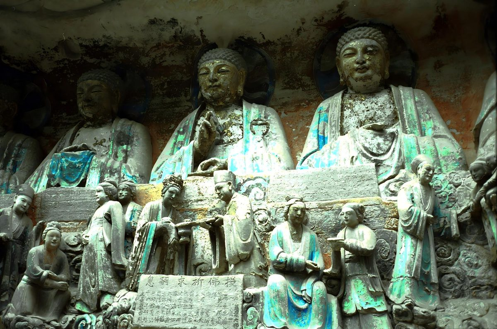

大足石刻

大足石刻不是一处石窟，而是一片：宝顶山、北山、南山等数十处摩崖造像散落在大足的山间。
为什么是石刻
唐末以后，北方石窟逐渐衰落，南方的摩崖造像却兴盛起来，大足正是这一转变的代表。 这里的题材不只是佛教，还有道教与儒家，被称为"三教合一"的石刻博物馆。1999 年， 大足石刻被列入《世界遗产名录》。
三处重点
| 地点 | 年代 | 看什么 |
|---|---|---|
| 宝顶山 | 南宋 | 千手观音、释迦涅槃圣迹图，规模最大的一处 |
| 北山 | 唐末至南宋 | 造像精致，数珠手观音被称为"媚态观音" |
| 南山 | 南宋 | 道教造像，三清与圣母 |
怎么逛
先看宝顶山，大佛湾一线走完大约两小时；有余力再去北山。石刻在崖壁上，光线侧着打过来最好看， 上午和傍晚都比正午合适。雨天石面湿滑，慢慢走。
提示：石窟内不要开闪光灯，也不要用手指触碰造像。